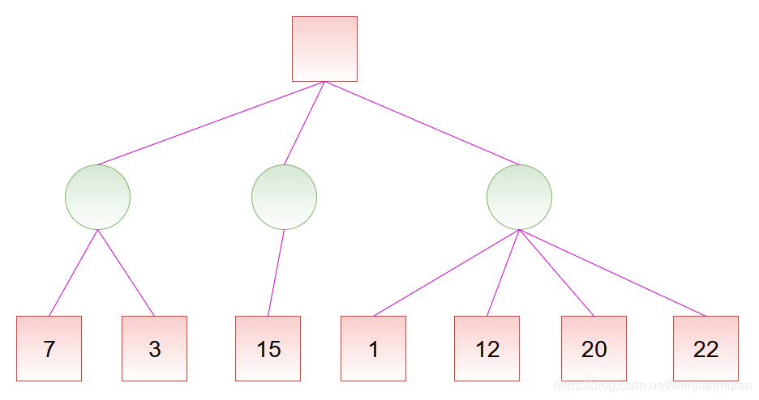
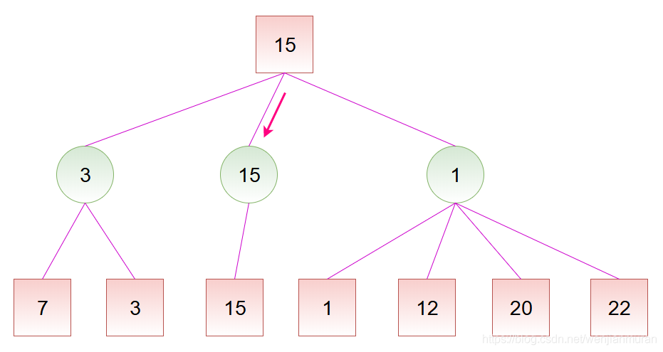
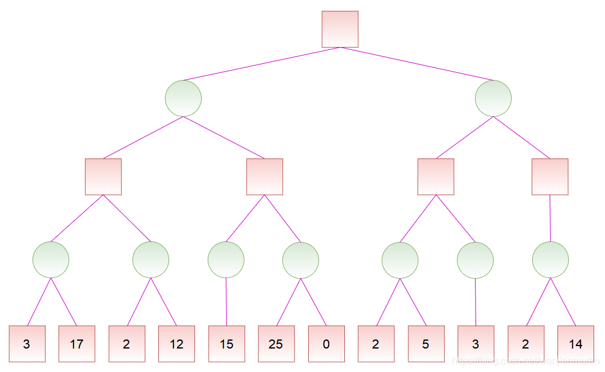
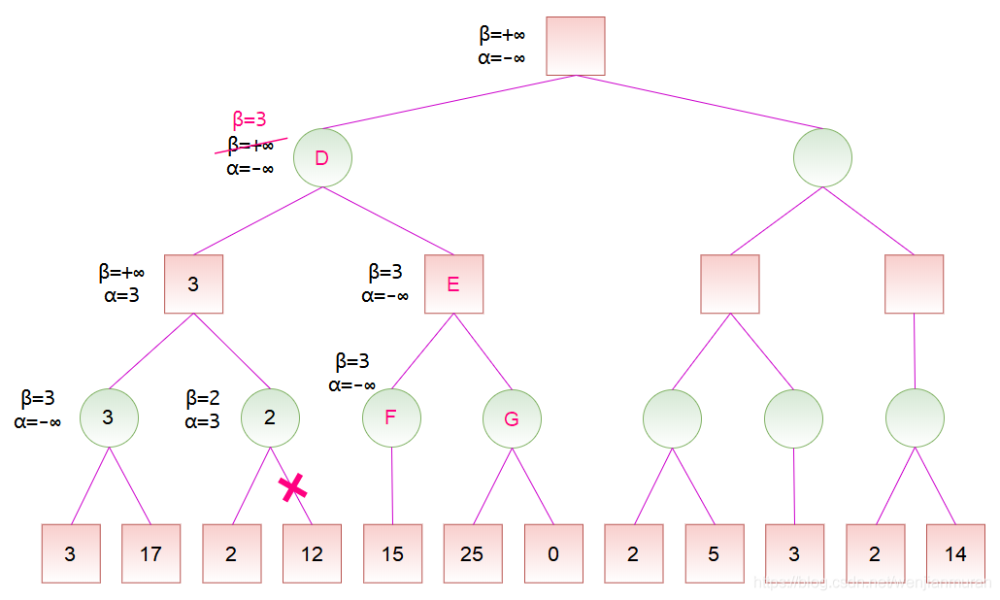
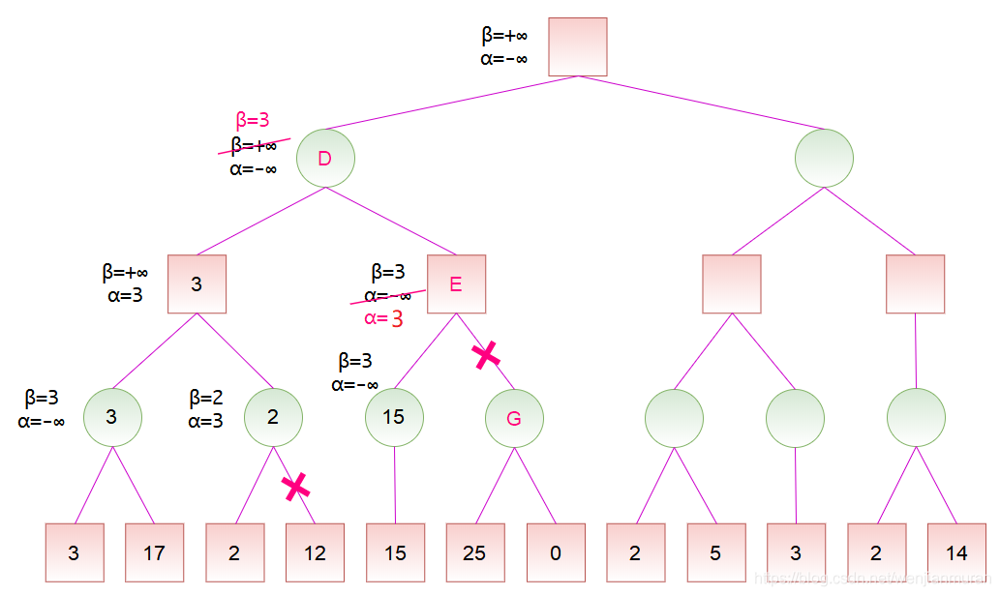

Alpha-Beta 剪枝
此页面将简要介绍 minimax 算法和
Minimax 算法
定义
Minimax 算法又叫极小化极大算法，是一种找出失败的最大可能性中的最小值的算法。1
在局面确定的双人对弈里，常进行对抗搜索，构建一棵每个节点都为一个确定状态的搜索树。奇数层为己方先手，偶数层为对方先手。搜索树上每个叶子节点都会被赋予一个估值，估值越大代表我方赢面越大。我方追求更大的赢面，而对方会设法降低我方的赢面，体现在搜索树上就是，奇数层节点（我方节点）总是会选择赢面最大的子节点状态，而偶数层（对方节点）总是会选择我方赢面最小的的子节点状态。
过程
Minimax 算法的整个过程，会从上到下遍历搜索树，回溯时利用子树信息更新答案，最后得到根节点的值，意义就是我方在双方都采取最优策略下能获得的最大分数。
解释
来看一个简单的例子。
称我方为 MAX，对方为 MIN，图示如下：

例如，对于如下的局势，假设从左往右搜索，根节点的数值为我方赢面：

我方应选择中间的路线。因为，如果选择左边的路线，最差的赢面是 3；如果选择中间的路线，最差的赢面是 15；如果选择右边的路线，最差的赢面是 1。虽然选择右边的路线可能有 22 的赢面，但对方也可能使我方只有 1 的赢面，假设对方会选择使得我方赢面最小的方向走，那么经过权衡，显然选择中间的路线更为稳妥。

实际上，在看右边的路线时，当发现赢面可能为 1 就不必再去看赢面为 12、20、22 的分支了，因为已经可以确定右边的路线不是最好的。
朴素的 Minimax 算法常常需要构建一棵庞大的搜索树，时间和空间复杂度都将不能承受。而
需要注意的是，对于不同的问题，搜索树每个节点上的值有着不同的含义，它可以是估值、分数、赢的概率等等，为方便起见，我们下面统一用分数来称呼。
alpha-beta 剪枝
过程
对于如下的局势，假设从左往右搜索：
若已知某节点的所有子节点的分数，则可以算出该节点的分数：对于 MAX 节点，取最大分数；对于 MIN 节点，取最小分数。
若已知某节点的部分子节点的分数，虽然不能算出该节点的分数，但可以算出该节点的分数的取值范围。同时，利用该节点的分数的取值范围，在搜素其子节点时，如果已经确定没有更好的走法，就不必再搜索剩余的子节点了。
记

初始化时，令

节点 A 是节点 B 的子节点，计算出节点 A 的分数后，可以更新节点 B 的分数范围。由于节点 B 是 MAX 节点，试图找分数大的走法，于是将

对于节点 C，由于左子节点的分数为 2，而节点 C 是 MIN 节点，于是将

计算出节点 B 的分数后，节点 B 是节点 D 的一个子节点，故可以更新节点 D 的分数范围。由于节点 D 是 MIN 节点，于是将

计算出节点 F 的分数后，节点 F 是节点 E 的一个子节点，故可以更新节点 E 的分数范围。节点 E 是 MAX 节点，更新

计算出节点 D 的分数后，节点 D 是节点 H 的一个子节点，故可以更新节点 H 的分数范围。节点 H 是 MAX 节点，更新

计算出节点 K 的分数后，节点 K 是节点 J 的一个子节点，故可以更新节点 J 的分数范围。节点 J 是 MAX 节点，更新

实现
参考代码
int alpha_beta(int u, int alph, int beta, bool is_max) {
if (!son_num[u]) return val[u];
if (is_max) {
for (int i = 0; i < son_num[u]; ++i) {
int d = son[u][i];
alph = max(alph, alpha_beta(d, alph, beta, !is_max));
if (alph >= beta) break;
}
return alph;
} else {
for (int i = 0; i < son_num[u]; ++i) {
int d = son[u][i];
beta = min(beta, alpha_beta(d, alph, beta, !is_max));
if (alph >= beta) break;
}
return beta;
}
}
参考资料与注释
本文部分引用自博文 详解 Minimax 算法与α-β剪枝_文剑木然，遵循 CC 4.0 BY-SA 版权协议。
创建日期: 2021年9月4日